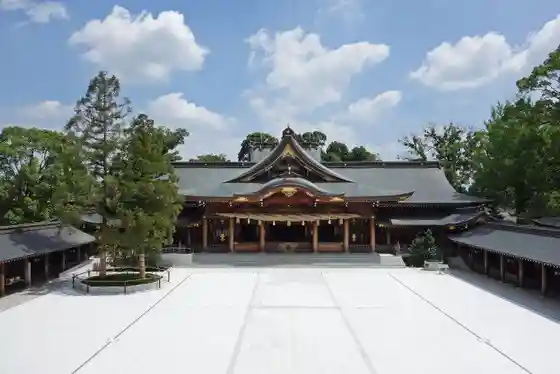
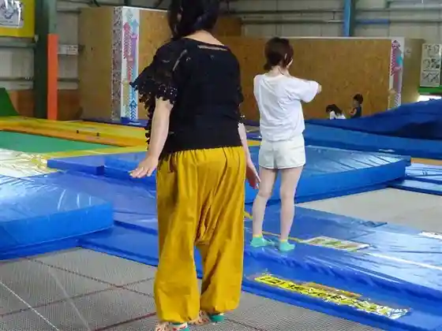
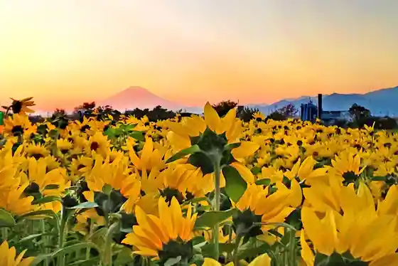
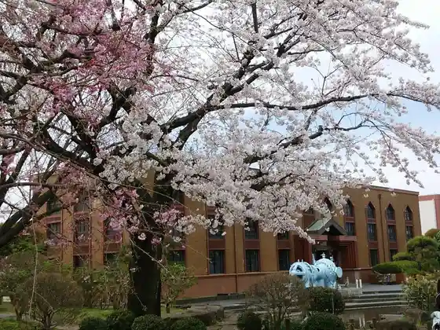

Kirimbibarejji Shonan Kojo (Gogo no Kocha Tour)
Samukawa, Kanagawa · 070-4235-870 · Official / source link

Piisutoranporinjimu Samukawa
Samukawa, Kanagawa · 0467-38-6992 · Official / source link

Samukawa Shrine
Samukawa, Kanagawa · 0467-75-0004 · Official / source link
Samukawa Fuyu no Himawari
Samukawa, Kanagawa · 0467-75-9051 · Official / source link

Kanagawaken Suido Memorial Museum
Samukawa, Kanagawa · 0467-74-3478 · Official / source link

Kyo Zen Tera (Zazen Experience & Kengaku)
Samukawa, Kanagawa · Official / source link
Waiwai City (Samukawa Mise)
Samukawa, Kanagawa · 0467-72-0872 · Official / source link
Samukawa Chuo Park
Samukawa, Kanagawa · 0467-74-1111 · Official / source link
Kawa to no Fureai Park (Kaiun Fujisan Supotto : Sakasa Fuji)
Samukawa, Kanagawa · 0467-74-1111 · Official / source link
Anraku Tera (Shakyo Experience)
Samukawa, Kanagawa · Official / source link
Samukawa Shrine Sando no Sakura Namiki
Samukawa, Kanagawa · 0467-75-0004 · Official / source link
Shonan Ginga Bridge (Fujisan Viewpoint)
Samukawa, Kanagawa · 0467-75-9051 · Official / source link
Hakkaku Plaza
Samukawa, Kanagawa · 0467-74-1111 · Official / source link
Kazuyuki Miya Greenway
Samukawa, Kanagawa · 0467-75-9051 · Official / source link
Kajiwara Kagetoki Kan Shi
Samukawa, Kanagawa · Official / source link
Kazuyuki Miya Park
Samukawa, Kanagawa · Official / source link
Samukawa Ekimae Park
Samukawa, Kanagawa · 0467-75-9051 · Official / source link